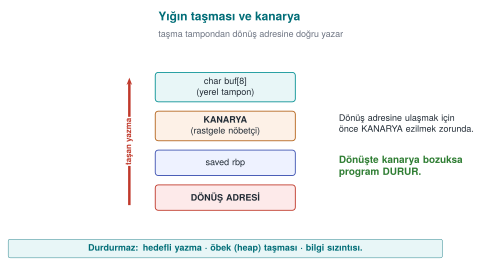

Previous slide Next slide Toggle fullscreen Open presenter view
CEN429 Güvenli Programlama · Hafta 4
Kod Sağlamlaştırma: C/C++
CEN429 Güvenli Programlama — Hafta 4
Dr. Öğr. Üyesi Uğur CORUH · 09.10.2026
RTEÜ Bilgisayar Mühendisliği · 2026-2027 Güz
CEN429 Güvenli Programlama · Hafta 4
Bugünün planı (3 saat)
Saat
Bölüm
Konu
1
0–2
Temel kavramlar · sağlamlaştırma katmanları · SEI CERT · girdi doğrulama
2
3–4
Biçim dizisi · UAF · tamsayı/UB · hata/sinyal · statik analiz · sanitizer · fuzzing
3
5–7
Derleyici/OS korumaları · güvenli derleme hattı · kod gizlemeye giriş · proje
RTEÜ Bilgisayar Mühendisliği · 2026-2027 Güz
CEN429 Güvenli Programlama · Hafta 4
Kısa tarihçe — bellek hataları ve savunmaların yarışı
1988 — Morris Worm tampon taşmasını dünyaya duyurur1996 — Smashing the Stack for Fun and Profit sömürüyü herkese öğretir1998 → 2004 — kanarya (StackGuard) · ASLR (PaX) · DEP/NX · FORTIFY2012–13 — AddressSanitizer ve fuzzing (AFL) hataları otomatik yakalar
Ders bu yarışı izler: hatayı yaz → araç yakalasın → derleyici/OS korusun.
RTEÜ Bilgisayar Mühendisliği · 2026-2027 Güz
CEN429 Güvenli Programlama · Hafta 4
Bu hafta nereye oturuyor?
1–3. hafta: güvenlik ilkeleri, tehdit modeli, kripto.Bu hafta (4): C/C++ kodunu sağlamlaştırmak — hatasız yaz, hata kaçarsa zararı sınırla, okumayı zorlaştır.5. hafta: aynı konu Java/yorumlanan diller.
RTEÜ Bilgisayar Mühendisliği · 2026-2027 Güz
CEN429 Güvenli Programlama · Hafta 4
Öğrenme çıktısı
Bu hafta ÖÇ.3 (ikili uygulama korumaları) üstünedir.
Sonunda yapabileceğiniz:
Yaygın C/C++ zafiyetlerini tanımak ve düzeltmek
Statik analiz, sanitizer, fuzzing kullanmak
Derleyici/OS korumalarını açmak ve doğrulamak
RTEÜ Bilgisayar Mühendisliği · 2026-2027 Güz
CEN429 Güvenli Programlama · Hafta 4
Üç katman, doğru sıra
Kod sağlamlaştırma üç katmandır. Sıra önemli:
Önce hatasız kod (güvenli kodlama)Sonra zararı sınırla (derleyici/OS korumaları)En son okumayı zorlaştır (gizleme)
⚠️ Gizleme, hatayı düzeltmez.
RTEÜ Bilgisayar Mühendisliği · 2026-2027 Güz
CEN429 Güvenli Programlama · Hafta 4
Neden bu sıra?
Hatalı koda koruma eklemek, çürük temele boya çekmek gibidir.
Önce hatayı kaldır ; sonra kaçanı yakala ; en son tersine mühendisliği yavaşlat .
Bu hafta üçünü de göreceğiz, bu sırayla.
RTEÜ Bilgisayar Mühendisliği · 2026-2027 Güz
CEN429 Güvenli Programlama · Hafta 4
0. Temel kavramlar (sıfırdan)
RTEÜ Bilgisayar Mühendisliği · 2026-2027 Güz
CEN429 Güvenli Programlama · Hafta 4
Bellek: yığın ve öbek
Yığın (stack): fonksiyon çağrılarının yerel değişkenlerini tuttuğu, otomatik yönetilen bellek.Öbek (heap): malloc/new ile elle ayrılan, free/delete ile bırakılan bellek.
İkisi de taşma ve hata kaynağı olabilir.
RTEÜ Bilgisayar Mühendisliği · 2026-2027 Güz
CEN429 Güvenli Programlama · Hafta 4
İşaretçi (pointer)
İşaretçi: bir bellek adresini tutan değişken.p bir adres; *p o adresteki değer.Yanlış adres → çökme ya da yanlış veri.
RTEÜ Bilgisayar Mühendisliği · 2026-2027 Güz
CEN429 Güvenli Programlama · Hafta 4
Tampon (buffer) ve taşma
Tampon: ardışık bellek bloğu (ör. char ad[16]).Taşma (buffer overflow): tampona sığmayan kadar veri yazmak → komşu belleği bozar.Klasik ve tehlikeli bir hata sınıfı.
RTEÜ Bilgisayar Mühendisliği · 2026-2027 Güz
CEN429 Güvenli Programlama · Hafta 4
Neden taşma tehlikeli?
Komşu değişkenleri, dönüş adresini bozabilir.
Saldırgan bunu denetim akışını ele geçirmek için kullanabilir.
Bu yüzden sınır denetimi hayatidir.
RTEÜ Bilgisayar Mühendisliği · 2026-2027 Güz
CEN429 Güvenli Programlama · Hafta 4
Tanımsız davranış (UB) nedir?
Tanımsız davranış (undefined behavior): C/C++ standardının "sonucu belirsiz" dediği durumlar.Örnek: işaretli tamsayı taşması, dizinin dışına erişim.
Derleyici bunu istediği gibi ele alabilir — hatta ilgili denetimi silebilir .
RTEÜ Bilgisayar Mühendisliği · 2026-2027 Güz
CEN429 Güvenli Programlama · Hafta 4
Derleyici bayrağı (flag)
Bayrak: derleyiciye verilen seçenek.Örnek: -O2 (optimizasyon), -Wall (uyarılar), -fsanitize=address.
Doğru bayraklar birçok hatayı derleme anında yakalar.
RTEÜ Bilgisayar Mühendisliği · 2026-2027 Güz
CEN429 Güvenli Programlama · Hafta 4
Uyarı (warning) vs hata (error)
Hata: derleme durur.Uyarı: derleme sürer ama bir sorun bildirilir.Kural: uyarıları hataya çevir (-Werror) — görmezden gelinen uyarı, gelecekteki açıktır.
RTEÜ Bilgisayar Mühendisliği · 2026-2027 Güz
CEN429 Güvenli Programlama · Hafta 4
CWE nedir?
CWE (Common Weakness Enumeration): yazılım zayıflıklarının numaralı kataloğu.Örnek: CWE-416 = "use-after-free".
Bir bulguyu CWE numarasıyla adlandırmak, onu aranabilir yapar.
RTEÜ Bilgisayar Mühendisliği · 2026-2027 Güz
CEN429 Güvenli Programlama · Hafta 4
CERT nedir?
SEI CERT C/C++: güvenli kodlamanın kural kitabı .Her kural: hatalı örnek + uyumlu çözüm + risk + CWE bağı.
Örnek: STR31-C = dizgeye yeterli yer ayır.
RTEÜ Bilgisayar Mühendisliği · 2026-2027 Güz
CEN429 Güvenli Programlama · Hafta 4
Statik vs dinamik analiz
Statik analiz: kodu çalıştırmadan inceleme (derleyici uyarıları, clang-tidy).Dinamik analiz: kodu çalıştırırken izleme (sanitizer'lar).İkisi birbirini tamamlar.
RTEÜ Bilgisayar Mühendisliği · 2026-2027 Güz
CEN429 Güvenli Programlama · Hafta 4
Sanitizer nedir?
Sanitizer: programı çalıştırırken bellek/UB hatalarını yakalayan derleyici aracı.Örnek: ASan (adres), UBSan (tanımsız davranış).
Sürüme gitmez; test/CI 'da kullanılır.
RTEÜ Bilgisayar Mühendisliği · 2026-2027 Güz
CEN429 Güvenli Programlama · Hafta 4
Fuzzing nedir?
Fuzzing: programa rastgele/beklenmeyen girdiler verip çökme aramak.İnsanın düşünmediği girdileri bulur.
Sanitizer'la birlikte çok güçlü.
RTEÜ Bilgisayar Mühendisliği · 2026-2027 Güz
CEN429 Güvenli Programlama · Hafta 4
ASLR, NX/DEP, kanarya
ASLR: bellek adreslerini rastgeleleştirir (saldırgan adresi tahmin edemesin).NX/DEP: veri bölgesindeki baytları kod olarak çalıştırmayı engeller.Yığın kanaryası: dönüş adresinden önce bir nöbetçi değer ; taşma onu bozarsa program durur.
RTEÜ Bilgisayar Mühendisliği · 2026-2027 Güz
CEN429 Güvenli Programlama · Hafta 4
Beyaz kutu saldırgan (hatırlatma)
Programa sahip saldırgan (1. hafta MATE).
Dizgeleri okur, fonksiyonları adıyla bulur, denetimi atlar.
Gizleme bölümünde (bugün sonunda) buna döneceğiz.
RTEÜ Bilgisayar Mühendisliği · 2026-2027 Güz
CEN429 Güvenli Programlama · Hafta 4
CI (sürekli entegrasyon)
CI (Continuous Integration): her kod değişikliğinde otomatik derleme + test çalıştıran sistem.Güvenlik araçlarını (uyarı, statik analiz, sanitizer, fuzzing) her birleştirmede koşturur.
RTEÜ Bilgisayar Mühendisliği · 2026-2027 Güz
CEN429 Güvenli Programlama · Hafta 4
Şimdi hazırız
Terimler:
yığın/öbek · işaretçi · tampon/taşma · UB · bayrak · uyarı/hata · CWE · CERT · statik/dinamik · sanitizer · fuzzing · ASLR/NX/kanarya · CI
Şimdi: kod sağlamlaştırmanın katmanları.
RTEÜ Bilgisayar Mühendisliği · 2026-2027 Güz
CEN429 Güvenli Programlama · Hafta 4
1. Katmanlar ve SEI CERT
RTEÜ Bilgisayar Mühendisliği · 2026-2027 Güz
CEN429 Güvenli Programlama · Hafta 4
Katman 2 · Güvenli kodlama
Soru: kodumda hata var mı?Araçlar: CERT kuralları, sanitizer, fuzzing.Amaç: hatayı en baştan yazmamak .
RTEÜ Bilgisayar Mühendisliği · 2026-2027 Güz
CEN429 Güvenli Programlama · Hafta 4
Katman 3 · Derleyici/OS
Soru: hata kaçarsa sömürü zor mu?Araçlar: kanarya, FORTIFY, ASLR, NX, RELRO, CFI.Amaç: kalan hatanın istismarını pahalı kılmak.
RTEÜ Bilgisayar Mühendisliği · 2026-2027 Güz
CEN429 Güvenli Programlama · Hafta 4
Katman 4 · Gizleme
Soru: kodu okuyan anlıyor mu?Araçlar: sembol/dize gizleme, günlük kaldırma, düzleştirme.Amaç: tersine mühendisliği yavaşlatmak .
RTEÜ Bilgisayar Mühendisliği · 2026-2027 Güz
CEN429 Güvenli Programlama · Hafta 4
Sahadan: şema gereksinimleri
Sertifikalı bir üründe:
"Yaygın zafiyetler ele alınmalı: hassas veri, enjeksiyon, taşma, dile özgü zayıflıklar"
"Savunmacı programlama kodun tamamında tutarlı "
"Statik ve dinamik tersine mühendisliğe karşı koruma"
➡️ Yalnız native tarafta 18 sağlamlaştırma önlemi .
RTEÜ Bilgisayar Mühendisliği · 2026-2027 Güz
CEN429 Güvenli Programlama · Hafta 4
SEI CERT: bir kural neye benzer?
Her CERT kuralının parçaları:
Kimlik: STR31-C, MEM50-CPPBaşlık: tek cümleHatalı örnek ve uyumlu çözüm Risk düzeyi (L1/L2/L3) ve CWE bağı
RTEÜ Bilgisayar Mühendisliği · 2026-2027 Güz
CEN429 Güvenli Programlama · Hafta 4
Kural mı, öneri mi?
Kural (rule): ihlali bir zafiyettir , denetlenebilir.Öneri (recommendation): iyi uygulama.İncelemeye L1 (en yüksek risk) kurallarından başla.
RTEÜ Bilgisayar Mühendisliği · 2026-2027 Güz
CEN429 Güvenli Programlama · Hafta 4
Risk düzeyi nasıl belirlenir?
Risk = önem × olasılık × düzeltme maliyeti .
L1: yüksek risk, önce bunlar.L2 / L3: giderek düşer.
RTEÜ Bilgisayar Mühendisliği · 2026-2027 Güz
CEN429 Güvenli Programlama · Hafta 4
CERT kategorileri (1)
Kısaltma
Kategori
Örnek
INT
Tamsayılar
INT32-C: işaretli taşmaya izin verme
ARR/STR
Dizi/dizge
STR31-C: yeterli yer ayır
MEM
Bellek
MEM30-C: bırakılmış belleğe erişme
FIO
Dosya G/Ç
FIO30-C: girdiyi biçim dizgesinden dışla
RTEÜ Bilgisayar Mühendisliği · 2026-2027 Güz
CEN429 Güvenli Programlama · Hafta 4
CERT kategorileri (2)
Kısaltma
Kategori
Örnek
ENV
Ortam
ENV33-C: system() çağırma
SIG
Sinyaller
SIG30-C: işleyicide yalnız güvenli fn.
ERR
Hata işleme
ERR33-C: kütüphane hatasını algıla
CON/MSC
Eşzamanlılık/çeşitli
CON43-C, MSC32-C
C++: MEM50-CPP, CTR50-CPP, STR50-CPP, EXP53-CPP, ERR50-CPP.
RTEÜ Bilgisayar Mühendisliği · 2026-2027 Güz
CEN429 Güvenli Programlama · Hafta 4
Otomatik CERT denetimi
Uyarılar: -Wall -Wextra -Wformat=2 -Wconversion
clang-tidy cert-*cppcheck --addon=certMSVC /analyze
Değerlendirici önce bu taramayı çalıştırır, sonra elle okur.
RTEÜ Bilgisayar Mühendisliği · 2026-2027 Güz
CEN429 Güvenli Programlama · Hafta 4
Girdi doğrulama
RTEÜ Bilgisayar Mühendisliği · 2026-2027 Güz
CEN429 Güvenli Programlama · Hafta 4
Girdi nereden gelir?
Sandığınızdan çok yerden. Ve hepsi güvenilmez :
Komut satırı, ortam değişkenleri
Dosya, ağ
IPC (aynı makinedeki başka süreç)
Veritabanı, kütüphane arayüzü (JNI)
RTEÜ Bilgisayar Mühendisliği · 2026-2027 Güz
CEN429 Güvenli Programlama · Hafta 4
Sık unutulan girdiler
argv[0] bile saldırganın olabilir; PATH, LANG.Dosya biçimindeki uzunluk alanları .
Ağ: "16 bayt" der, 1 bayt gönderir.
"Kendi verimiz" sonradan değişmiş olabilir.
RTEÜ Bilgisayar Mühendisliği · 2026-2027 Güz
CEN429 Güvenli Programlama · Hafta 4
Girdi doğrulamanın beş ilkesi
Beyaz liste (izin verilenleri say), kara liste değil.Önce kanonikleştir , sonra doğrula.
Uzunluk → tür → aralık → biçim sırasıyla.Güven sınırında , en erken noktada.Reddet , "temizleyip" kullanma.
RTEÜ Bilgisayar Mühendisliği · 2026-2027 Güz
CEN429 Güvenli Programlama · Hafta 4
İlke 1 · Beyaz liste
Kara liste: "şunlar yasak" — hep bir şey unutulur.Beyaz liste: "yalnız şunlar serbest" — güvenli varsayılan.
Örnek: kullanıcı adı yalnız [a-z0-9_] olsun.
RTEÜ Bilgisayar Mühendisliği · 2026-2027 Güz
CEN429 Güvenli Programlama · Hafta 4
İlke 2 · Kanonikleştir
Aynı şeyin farklı yazımları: /tmp/../etc, %2e%2e/.
Önce tek biçime indir (kanonikleştir), sonra denetle.
Yoksa denetim atlatılır.
RTEÜ Bilgisayar Mühendisliği · 2026-2027 Güz
CEN429 Güvenli Programlama · Hafta 4
İlke 3 · atoi değil strtol
errno = 0 ;
long v = strtol(s, &son, 10 );
if (son == s) return -1 ;
if (*son != '\0' ) return -1 ;
if (errno == ERANGE) return -1 ;
if (v < en_az || v > en_cok) return -1 ;
RTEÜ Bilgisayar Mühendisliği · 2026-2027 Güz
CEN429 Güvenli Programlama · Hafta 4
Neden atoi tehlikeli?
atoi("abc") = 0 (hata sessiz)atoi("99999999999") = tanımsız (taşma)atoi("12abc") = 12 (fazlalık yok sayılır)
strtol her hatayı size bildirir ; atoi bildirmez.
RTEÜ Bilgisayar Mühendisliği · 2026-2027 Güz
CEN429 Güvenli Programlama · Hafta 4
İlke 3 · uzunluk önekli kayıt
if (kalan < 3 ) return -1 ;
uint16_t uzunluk = tampon[1 ] << 8 | tampon[2 ];
if (uzunluk > kalan - 3 ) return -1 ;
if (uzunluk > sizeof k->veri) return -1 ;
memcpy (k->veri, tampon + 3 , uzunluk);
RTEÜ Bilgisayar Mühendisliği · 2026-2027 Güz
CEN429 Güvenli Programlama · Hafta 4
İki ayrı denetim, doğru sıra
Kaynak denetimi: bildirilen uzunluk, gelen veriden büyük mü?Hedef denetimi: hedef tampona sığıyor mu?Sıra: kalan - 3 sarmasın diye önce kalan < 3.
Sahada: JNI'den gelen her dizi native tarafta yeniden doğrulanır.
RTEÜ Bilgisayar Mühendisliği · 2026-2027 Güz
CEN429 Güvenli Programlama · Hafta 4
CERT çifti · STR31-C
strcpy (kopya, ad);
int n = snprintf (kopya, sizeof kopya, "%s" , ad);
if (n < 0 || (size_t )n >= sizeof kopya) { }
strcpy sınır bilmez; snprintf boyutu bilir ve kesilmeyi bildirir.
RTEÜ Bilgisayar Mühendisliği · 2026-2027 Güz
CEN429 Güvenli Programlama · Hafta 4
CERT çifti · INT30-C
size_t kalan = toplam - okunan;
if (okunan > toplam) return HATA;
size_t kalan = toplam - okunan;
İşaretsiz çıkarma sarar ; önce mantığı denetle.
RTEÜ Bilgisayar Mühendisliği · 2026-2027 Güz
CEN429 Güvenli Programlama · Hafta 4
CERT çifti · MEM30-C
for (d = bas; d; d = d->sonraki) free (d);
while (d) { Dugum *s = d->sonraki; free (d); d = s; }
free(d)'den sonra d->sonraki okumak = bırakılmış belleğe erişim.
RTEÜ Bilgisayar Mühendisliği · 2026-2027 Güz
CEN429 Güvenli Programlama · Hafta 4
CERT çifti · ERR33-C
FILE *f = fopen(yol,"rb" ); fread(t,1 ,n,f);
if (!f) return HATA;
if (fread(t,1 ,n,f) < n && ferror(f)) return HATA;
Her dönüş değerini denetle ; fopen NULL dönebilir.
RTEÜ Bilgisayar Mühendisliği · 2026-2027 Güz
CEN429 Güvenli Programlama · Hafta 4
Kural: bulguyu kimliğe bağla
Her bulguyu bir CERT kimliğiyle eşleştir:
"Bu satır MEM30-C ihlali (CWE-416)."
Böylece bulgu nesnel ve aranabilir olur.
RTEÜ Bilgisayar Mühendisliği · 2026-2027 Güz
CEN429 Güvenli Programlama · Hafta 4
Bölüm 1 — kısa sınama
Üç katman ve doğru sıra?
Kural ile öneri farkı?
atoi neden strtol'a göre tehlikeli?
RTEÜ Bilgisayar Mühendisliği · 2026-2027 Güz
CEN429 Güvenli Programlama · Hafta 4
Bölüm 1 — cevaplar
Sıra: güvenli kod (kaynak) → derleyici/araç korumaları → OS/çalışma zamanı korumaları. Önce doğru yaz, sonra sertleştir, sonra çalışma anında savun.Kural her zaman uygulanır, ihlali kusurdur; öneri bağlama göre iyi uygulamadır.atoi hatayı bildirmez (taşma/geçersiz girdide tanımsız/0); strtol endptr+ERANGE ile hatayı ve sınırı kontrol ettirir.
RTEÜ Bilgisayar Mühendisliği · 2026-2027 Güz
CEN429 Güvenli Programlama · Hafta 4
2. Biçim dizisi açığı
RTEÜ Bilgisayar Mühendisliği · 2026-2027 Güz
CEN429 Güvenli Programlama · Hafta 4
Sorun · printf(girdi)
printf (kullanici_girdisi);
printf ("%s" , kullanici_girdisi);
İlkinde kullanıcı girdisi bir biçim dizgesi olarak yorumlanır.
RTEÜ Bilgisayar Mühendisliği · 2026-2027 Güz
CEN429 Güvenli Programlama · Hafta 4
Neden tehlikeli?
printf biçim dizgesindeki % belirteçlerini komut sayar.
Kullanıcı %x, %s, %n gönderirse programa iş yaptırır.
RTEÜ Bilgisayar Mühendisliği · 2026-2027 Güz
CEN429 Güvenli Programlama · Hafta 4
Belirteç · %x, %p
Yığındaki değerleri okur ve yazdırır.
→ bilgi sızıntısı (adresler, gizli değerler).
ASLR'yi zayıflatır (adres sızarsa).
RTEÜ Bilgisayar Mühendisliği · 2026-2027 Güz
CEN429 Güvenli Programlama · Hafta 4
Belirteç · %s
Yığındaki bir değeri işaretçi sanar ve o adresteki dizgeyi okur.
Rastgele adres → çökme ya da bellek okuma.
RTEÜ Bilgisayar Mühendisliği · 2026-2027 Güz
CEN429 Güvenli Programlama · Hafta 4
Belirteç · %n
Şimdiye kadar yazılan karakter sayısını bir adrese yazar .
→ belleğe yazma → bozulma, denetim ele geçirme.
En tehlikelisi.
RTEÜ Bilgisayar Mühendisliği · 2026-2027 Güz
CEN429 Güvenli Programlama · Hafta 4
Aynı hata başka yerlerde
Sadece printf değil:
syslog, fprintf, snprintf, err/warn — hepsi biçim dizgesi alır.
Kural: biçim dizgesi her zaman sabit (FIO30-C).
RTEÜ Bilgisayar Mühendisliği · 2026-2027 Güz
CEN429 Güvenli Programlama · Hafta 4
Demo 1 — biçim dizisi
code/week-04/01-format-string · CWE-134
Adım
Ne görülür?
0
GCC -Wformat-security uyarır; MSVC /analyze yakalar
2 %x.%x…
Yığın dökülür, gizli (sentetik) değer görünür
3 AAAA%n
Linux korumasız çöker; Windows CRT %n'i reddeder
4
_FORTIFY_SOURCE: %n in writable segment
5
Belirteçler yalnız metin olarak görünür
RTEÜ Bilgisayar Mühendisliği · 2026-2027 Güz
CEN429 Güvenli Programlama · Hafta 4
Düzeltme · katman katman
Biçim dizgesi hep sabit (FIO30-C).
Uyarı: -Wformat -Wformat-security -Werror=format-security.
Kendi fonksiyonunuzu derleyiciye denetlettirin :
void gunluk_yaz (int duzey, const char *bicim, ...)
__attribute__ ((format(printf , 2 , 3 ))) ;
Çalışma anı: _FORTIFY_SOURCE=2; MS CRT %n kapalı.
RTEÜ Bilgisayar Mühendisliği · 2026-2027 Güz
CEN429 Güvenli Programlama · Hafta 4
3. Bellek: use-after-free
RTEÜ Bilgisayar Mühendisliği · 2026-2027 Güz
CEN429 Güvenli Programlama · Hafta 4
UAF nedir? · adım 1
Bir nesne öbekte.
İki işaretçi aynı nesneyi gösteriyor.
RTEÜ Bilgisayar Mühendisliği · 2026-2027 Güz
CEN429 Güvenli Programlama · Hafta 4
UAF · adım 2
Biri free ediyor.
Diğeri hâlâ o adresi tutuyor → askıda (dangling) işaretçi.
RTEÜ Bilgisayar Mühendisliği · 2026-2027 Güz
CEN429 Güvenli Programlama · Hafta 4
UAF · adım 3
Ayırıcı aynı bloğu başka nesneye veriyor.
Askıdaki işaretçi artık yabancı veriyi okur/yazar.
Nesnede fonksiyon işaretçisi varsa (C++ sanal tablo) risk büyür.
RTEÜ Bilgisayar Mühendisliği · 2026-2027 Güz
CEN429 Güvenli Programlama · Hafta 4
UAF neden çok yaygın?
Tarayıcı/OS güncellemelerindeki "bellek bozulması düzeltildi" notlarının büyük kısmı bu sınıftır.
Karmaşık sahiplik → askıda işaretçi.
RTEÜ Bilgisayar Mühendisliği · 2026-2027 Güz
CEN429 Güvenli Programlama · Hafta 4
Demo 2 — UAF ve çift bırakma
code/week-04/02-kullanim-sonrasi · CWE-416/415 · MEM30-C
Adım
Ne görülür?
1
Serbest blok dolar → rol user → admin
2 ASan
heap-use-after-free + yerler
3
Çift free → tanımsız davranış
4 ASan
attempting double-free
5
free + NULL, tek sahip → güvenli
RTEÜ Bilgisayar Mühendisliği · 2026-2027 Güz
CEN429 Güvenli Programlama · Hafta 4
ASan raporu · üç yığın izi
ERROR: heap-use-after-free
#0 oturum_kullan uaf.c:48 <- 1. KULLANIM
freed here:
#1 oturum_kapat uaf.c:31 <- 2. SERBEST BIRAKMA
allocated here:
#1 oturum_ac uaf.c:22 <- 3. AYIRMA
Düzeltme çoğunlukla 2. konumda : sahiplik kararı orada yanlış.
RTEÜ Bilgisayar Mühendisliği · 2026-2027 Güz
CEN429 Güvenli Programlama · Hafta 4
Çözüm · C tarafı
free'den sonra işaretçiyi NULLTek sahip , tek bırakma noktası belirle.Sahiplik kuralını yaz: "bu belleği kim bırakır?"
RTEÜ Bilgisayar Mühendisliği · 2026-2027 Güz
CEN429 Güvenli Programlama · Hafta 4
Çözüm · C++ akıllı işaretçiler
İhtiyaç
C++
Tek sahip
std::unique_ptr
Paylaşılan
std::shared_ptr
Sahipsiz gözlem
std::weak_ptr → lock()
Dizi
std::vector, std::array
if (auto o = onbellek.lock ()) kullan (*o);
⚠️ get() ham işaretçi; vector büyüyünce yineleyici geçersizleşir.
RTEÜ Bilgisayar Mühendisliği · 2026-2027 Güz
CEN429 Güvenli Programlama · Hafta 4
Tamsayılar ve UB
RTEÜ Bilgisayar Mühendisliği · 2026-2027 Güz
CEN429 Güvenli Programlama · Hafta 4
Dört tamsayı hatası
Hata
Örnek
Sonuç
İşaretsiz sarma
0u - 1 = 4.294.967.295Mantık hatası
İşaretli taşma
INT_MAX + 1Tanımsız
Dönüşüm kaybı
long long→intKesilme
Kaydırma
1 << 31Tanımsız
RTEÜ Bilgisayar Mühendisliği · 2026-2027 Güz
CEN429 Güvenli Programlama · Hafta 4
Neden önemli? · çarpım taşması
uint32_t boyut = adet * 4 ;
dizi = malloc (boyut);
Küçük ayrılan bloğa çok yazmak = taşma.
RTEÜ Bilgisayar Mühendisliği · 2026-2027 Güz
CEN429 Güvenli Programlama · Hafta 4
UB · derleyici denetimi silebilir
if (x + 100 < x)
return -1 ;
-O0'da "çalışır", -O2'de denetim yok olur .UB'ye güvenilmez.
RTEÜ Bilgisayar Mühendisliği · 2026-2027 Güz
CEN429 Güvenli Programlama · Hafta 4
Doğru: önce denetle
if ((b > 0 && a > INT_MAX - b) ||
(b < 0 && a < INT_MIN - b)) return false ;
if (__builtin_mul_overflow(a, b, &sonuc)) return false ;
Taşmayı olmadan önce yakala.
RTEÜ Bilgisayar Mühendisliği · 2026-2027 Güz
CEN429 Güvenli Programlama · Hafta 4
Demo 3 — UB ve UBSan
code/week-04/03-tanimsiz-davranis · CWE-190/758
İşaretli taşma, geçersiz kaydırma, hizasız erişim
x86'da çoğu sessizce yanlış sonuç
-fsanitize=undefined → signed integer overflow: 2147483647 + 1 ...Windows: UBSan yok → /RTC, /analyze, CERT
⚠️ -fwrapv mantık hatasını gizler ; tanı için kullanma.
RTEÜ Bilgisayar Mühendisliği · 2026-2027 Güz
CEN429 Güvenli Programlama · Hafta 4
Hata işleme ve sinyaller
RTEÜ Bilgisayar Mühendisliği · 2026-2027 Güz
CEN429 Güvenli Programlama · Hafta 4
Denetlenmeyen dönüş değeri
Çağrı
Denetlenmezse
mallocNULL'a yazma
setresuidYetkili kalır
RAND_bytes"Rastgele" anahtar sıfır
EVP_DecryptFinal_exKurcalanmış veri doğrulanmış sanılır
RTEÜ Bilgisayar Mühendisliği · 2026-2027 Güz
CEN429 Güvenli Programlama · Hafta 4
Hata işleme kuralları
Her dönüşü denetle (ERR33-C); [[nodiscard]].
Hatada güvenli duruma dön (goto temizle) — fail-closed .
İleti ipucu vermesin: "kullanıcı yok" ≠ "parola yanlış".
RTEÜ Bilgisayar Mühendisliği · 2026-2027 Güz
CEN429 Güvenli Programlama · Hafta 4
Sahadan: opak dönüş değerleri
Native fonksiyonlar ayrıntılı hata kodu döndürmez .
Yalnız başarılı/başarısız, üstelik opak (9. hafta).
Ayrıntılı kod = saldırgana "hangi denetimde takıldın" haritası.
Tanı için ayrı, güvenli kanal → ödünleşim kaydı.
RTEÜ Bilgisayar Mühendisliği · 2026-2027 Güz
CEN429 Güvenli Programlama · Hafta 4
Sinyal işleyici · kural
static volatile sig_atomic_t durdur = 0 ;
static void isleyici (int s) { (void )s; durdur = 1 ; }
İşleyicide printf, malloc, free yok (SIG30-C).
Eşzamansız-güvenli olmayan fonksiyon çağırma.
signal() yerine sigaction().
RTEÜ Bilgisayar Mühendisliği · 2026-2027 Güz
CEN429 Güvenli Programlama · Hafta 4
Gerçek olay: regreSSHion
2024 CVE-2024-6387: zaman aşımı sinyal işleyicisi güvensiz bir günlük fonksiyonu çağırıyordu.
Sonuç: uzaktan kod çalıştırma riski.
Ders: işleyicide yalnız bayrak set et.
RTEÜ Bilgisayar Mühendisliği · 2026-2027 Güz
CEN429 Güvenli Programlama · Hafta 4
Bölüm 2–3 — kısa sınama
%n neden en tehlikelisi?UAF raporundaki üç iz? Düzeltme hangisinde?
if (x+100 < x) neden silinebilir?Sinyal işleyicide neden printf yok?
RTEÜ Bilgisayar Mühendisliği · 2026-2027 Güz
CEN429 Güvenli Programlama · Hafta 4
Bölüm 2–3 — cevaplar
%n biçim belirtecinin yazdığı bayt sayısını belleğe YAZAR → saldırgan seçtiği adrese yazıp akışı ele geçirebilir.allocated-by · freed-by · use-here. Düzeltme freed↔use arasında: free sonrası işaretçiyi NULL yap / yaşam süresini düzelt.İmzalı taşma tanımsız davranıştır ; derleyici "taşma olmaz" varsayar → koşul hep false → siler . Kontrolü __builtin_add_overflow ile yapın.
printf async-signal-safe değil ; işleyicide yeniden girişte kilit/durum bozulur → kilitlenme/çökme. Yalnız write gibi güvenli çağrılar.
RTEÜ Bilgisayar Mühendisliği · 2026-2027 Güz
CEN429 Güvenli Programlama · Hafta 4
4. Statik analiz, sanitizer, fuzzing
RTEÜ Bilgisayar Mühendisliği · 2026-2027 Güz
CEN429 Güvenli Programlama · Hafta 4
Statik analiz nedir? (hatırlatma)
Kodu çalıştırmadan inceleyip hata arama.
Avantaj: çalışmayan yolları da görür.yanlış alarm üretir.
RTEÜ Bilgisayar Mühendisliği · 2026-2027 Güz
CEN429 Güvenli Programlama · Hafta 4
Statik analiz · katman katman
Düzey
Araç
Bulduğu
Uyarılar
-Wall -Wextra -WconversionDönüşüm, biçim
Analizci
-fanalyzer, clang --analyze, /analyzeNULL, sızıntı
Kural
clang-tidy cert-*, cppcheckCERT ihlali
Anlamsal
CodeQL, Semgrep
Veri akışı
Ticari
Coverity, Klocwork
Derin analiz
RTEÜ Bilgisayar Mühendisliği · 2026-2027 Güz
CEN429 Güvenli Programlama · Hafta 4
Kirli veri: kaynak → hedef
kaynak: recv(sock, buf, ...)
len = buf[1]<<8 | buf[2] (doğrulama yok)
hedef: memcpy(out, buf+3, len) → BULGU: CWE-787
Araç, doğrulanmamış verinin tehlikeli bir yere aktığını görür.
RTEÜ Bilgisayar Mühendisliği · 2026-2027 Güz
CEN429 Güvenli Programlama · Hafta 4
Yanlış alarmla yaşamak
Önce yüksek güvenilirlikli kurallar.
Her bastırma gerekçeli : // NOLINT(cert-err33-c): neden.
Yeni kodda sıfır uyarı (CI zorlar).
Değerlendirici geliştiricinin kendi tarama raporunu ister.
RTEÜ Bilgisayar Mühendisliği · 2026-2027 Güz
CEN429 Güvenli Programlama · Hafta 4
Sanitizer nedir? (hatırlatma)
Programı çalıştırırken bellek/UB hatalarını yakalayan araç.
Yanlış alarm neredeyse yok ; ama yalnız çalışan yoldaki hatayı bulur.
→ test + fuzzing ile birlikte.
RTEÜ Bilgisayar Mühendisliği · 2026-2027 Güz
CEN429 Güvenli Programlama · Hafta 4
Sanitizer ailesi
Sanitizer
Bulduğu
Bayrak
ASan Taşma, UAF, çift bırakma
-fsanitize=address
LSan Sızıntı
ASan ile
UBSan Taşma, kaydırma, NULL
-fsanitize=undefined
MSan İlklendirilmemiş okuma
-fsanitize=memory
TSan Veri yarışı
-fsanitize=thread
RTEÜ Bilgisayar Mühendisliği · 2026-2027 Güz
CEN429 Güvenli Programlama · Hafta 4
ASan nasıl çalışır? · gölge bellek
Her 8 bayt için 1 gölge bayt : ne kadarı geçerli?
Dizilerin önüne/arkasına zehirli bölge (redzone).
Serbest bloklar karantinada bekler.
Her erişimden önce gölge denetimi.
RTEÜ Bilgisayar Mühendisliği · 2026-2027 Güz
CEN429 Güvenli Programlama · Hafta 4
ASan'ın kör noktası
struct {char ad[8 ]; long yetki; } k;
strcpy (k.ad, uzun_girdi);
Aynı yapının içinde alandan alana taşma → arada zehirli bölge yok → ASan görmez (1. hafta Demo 3).
RTEÜ Bilgisayar Mühendisliği · 2026-2027 Güz
CEN429 Güvenli Programlama · Hafta 4
Sanitizer sürüme gitmez
gcc -g -O1 -fno-omit-frame-pointer \
-fsanitize=address,undefined p.c -o p_test
Yavaşlatır (~2×), bellek kullanır.
Yalnız test/CI 'da; sürümde kapalı.
RTEÜ Bilgisayar Mühendisliği · 2026-2027 Güz
CEN429 Güvenli Programlama · Hafta 4
Fuzzing nedir? · kapsam güdümlü
tohum girdiler → değiştir (bit çevir, sil, ekle)
▲ │
│ ▼
yeni yol? ← çalıştır (sanitizer açık) → çökme? → kaydet
Yeni kod yolu açan girdi saklanır ve üzerinde çalışılır.
RTEÜ Bilgisayar Mühendisliği · 2026-2027 Güz
CEN429 Güvenli Programlama · Hafta 4
Fuzzing ne bulur?
Sihirli baytları, doğru uzunluk alanını kendiliğinden bulur.
İnsanın düşünmediği girdileri.
Araçlar: libFuzzer, AFL++, honggfuzz, OSS-Fuzz (on binlerce hata).
RTEÜ Bilgisayar Mühendisliği · 2026-2027 Güz
CEN429 Güvenli Programlama · Hafta 4
Fuzz hedefi yazmak
int LLVMFuzzerTestOneInput (const uint8_t *veri, size_t boyut) {
ayristir(veri, boyut);
return 0 ;
}
clang -g -O1 -fsanitize=fuzzer,address fuzz.c ayristir.c -o f
./f corpus/ -max_total_time=10
RTEÜ Bilgisayar Mühendisliği · 2026-2027 Güz
CEN429 Güvenli Programlama · Hafta 4
İyi fuzz hedefi
Dört özellik:
Hızlı (ağ/disk yok)Deterministik (aynı girdi → aynı sonuç)Durumsuz (önceki çağrıdan etkilenmez)Tek iş (bir fonksiyonu sınar)
RTEÜ Bilgisayar Mühendisliği · 2026-2027 Güz
CEN429 Güvenli Programlama · Hafta 4
Demo 4 — fuzzing ile hata bulmak
code/week-04/04-fuzzing · CWE-125/787
Adım
Ne olur?
1
tohum/normal.bin sorunsuz
2
libFuzzer ≤ 10 sn → çökerten girdi
3
ASan ile yeniden oynat → tam rapor
4
Düzeltilmiş sürüm → çökme yok
5
cokerten.bin güvenle reddedilir
"Şu fonksiyon şu süre fuzzlandı" = güçlü kanıt (S16).
RTEÜ Bilgisayar Mühendisliği · 2026-2027 Güz
CEN429 Güvenli Programlama · Hafta 4
Bölüm 4 — kısa sınama
Statik ve dinamik analizin farkı?
ASan hangi taşmayı göremez?
İyi fuzz hedefinin dört özelliği?
RTEÜ Bilgisayar Mühendisliği · 2026-2027 Güz
CEN429 Güvenli Programlama · Hafta 4
Bölüm 4 — cevaplar
Statik: kodu çalıştırmadan tüm yolları inceler (yanlış pozitif olabilir). Dinamik: çalıştırırken yalnız yürütülen yolda gerçek hatayı gözler.ASan redzone koyduğu yerleri görür; bir nesnenin içindeki alanlar arası taşmayı ve hiç çalışmayan yolları göremez.
Hızlı , deterministik , kendine yeterli (dış duruma bağlı değil), dar bir girdi yüzeyi işleyen; çökmede net başarısızlık veren hedef.
RTEÜ Bilgisayar Mühendisliği · 2026-2027 Güz
CEN429 Güvenli Programlama · Hafta 4
5. Derleyici ve OS korumaları
RTEÜ Bilgisayar Mühendisliği · 2026-2027 Güz
CEN429 Güvenli Programlama · Hafta 4
Katman 3 · fikir
Hata kaçtı diyelim.
Sömürüyü pahalı kılan otomatik korumalar var.
Çoğu bir derleme bayrağıyla açılır.
Bedava değil ama ucuz.
RTEÜ Bilgisayar Mühendisliği · 2026-2027 Güz
CEN429 Güvenli Programlama · Hafta 4
Yığın kanaryası
Dönüş adresinden önce bir nöbetçi değer konur.
Taşma bu değeri bozarsa, dönüşten önce fark edilir ve program durur .
-fstack-protector-strong / MSVC /GS.
RTEÜ Bilgisayar Mühendisliği · 2026-2027 Güz
CEN429 Güvenli Programlama · Hafta 4
Yığın taşması ve kanarya — şema

RTEÜ Bilgisayar Mühendisliği · 2026-2027 Güz
CEN429 Güvenli Programlama · Hafta 4
_FORTIFY_SOURCE
Boyutu bilinen tampona fazla yazan kütüphane çağrılarını yakalar.
-D_FORTIFY_SOURCE=2 (+ en az -O1).Kendi döngülerinizi korumaz .
RTEÜ Bilgisayar Mühendisliği · 2026-2027 Güz
CEN429 Güvenli Programlama · Hafta 4
PIE + ASLR
ASLR: adresleri rastgeleleştirir.PIE: programın da rastgele yüklenmesini sağlar.-fPIE -pie / /DYNAMICBASE /HIGHENTROPYVA.
RTEÜ Bilgisayar Mühendisliği · 2026-2027 Güz
CEN429 Güvenli Programlama · Hafta 4
DEP/NX ve RELRO
DEP/NX: veri bölgesini çalıştırılamaz yapar (varsayılan).RELRO: GOT gibi tabloları salt-okunur yapar → -Wl,-z,relro,-z,now.
RTEÜ Bilgisayar Mühendisliği · 2026-2027 Güz
CEN429 Güvenli Programlama · Hafta 4
CFI / CFG ve gölge yığın
CFI/CFG: dolaylı çağrıların yalnız geçerli hedeflere gitmesini denetler.-fcf-protection, -fsanitize=cfi / /guard:cf.Gölge yığın: dönüş adreslerinin ikinci kopyası (CET).
RTEÜ Bilgisayar Mühendisliği · 2026-2027 Güz
CEN429 Güvenli Programlama · Hafta 4
Korumalar · tek tablo
Koruma
GCC/Clang
MSVC
Kanarya
-fstack-protector-strong/GS
FORTIFY
-D_FORTIFY_SOURCE=2Güvenli CRT
PIE/ASLR
-fPIE -pie/DYNAMICBASE
NX
varsayılan
/NXCOMPAT
RELRO
-Wl,-z,relro,-z,now—
CFI
-fcf-protection/guard:cf
RTEÜ Bilgisayar Mühendisliği · 2026-2027 Güz
CEN429 Güvenli Programlama · Hafta 4
⚠️ Her koruma sınırlıdır
Koruma
Durdurur
Durdurmaz
Kanarya
Dönüş adresine taşma
Öbek taşması, sızan kanarya
FORTIFY
Kütüphane çağrısı taşması
Kendi döngüleriniz
ASLR
Sabit adres varsayımı
Adres sızıntısı
NX
Veri bölgesinde kod
Kod yeniden kullanımı (ROP)
RTEÜ Bilgisayar Mühendisliği · 2026-2027 Güz
CEN429 Güvenli Programlama · Hafta 4
Ana kural
Her koruma bir tekniği zorlaştırır, bir hata sınıfını kaldırmaz.
Mantık hatasına hiçbiri yetmez → önce güvenli kodlama.
RTEÜ Bilgisayar Mühendisliği · 2026-2027 Güz
CEN429 Güvenli Programlama · Hafta 4
Demo 5 — korumaları açıp kapatmak
code/week-04/05-derleyici-korumalari · CWE-121
Aynı taşma: giris_zayif (kapalı) vs giris_sert (açık).
Sert: *** stack smashing detected *** / Windows 0xC0000409.
Zayıf: sessiz bozulma ya da çökme.
readelf -h p | grep Type
readelf -d p | grep BIND_NOW
readelf -s p | grep __stack_chk
RTEÜ Bilgisayar Mühendisliği · 2026-2027 Güz
CEN429 Güvenli Programlama · Hafta 4
Önerilen sürüm bayrakları
GCC/Clang:
-O2 -D_FORTIFY_SOURCE=2 -fstack-protector-strong -fPIE -pie -Wl,-z,relro,-z,now -fcf-protection -Wall -Wextra -Wformat=2 -Werror=format-security
MSVC:
/O2 /GS /sdl /guard:cf /DYNAMICBASE /HIGHENTROPYVA /NXCOMPAT /CETCOMPAT /W4
RTEÜ Bilgisayar Mühendisliği · 2026-2027 Güz
CEN429 Güvenli Programlama · Hafta 4
Koruma tablosu = kanıt
Değerlendirici her ikili ve .so için koruma tablosu çıkarır.
Kapalı koruma bir bulgudur ; gerekçesi ödünleşim kaydında olmalı.
Şema: uygulama, korumaların açık olduğunu kendisi de denetleyebilir.
RTEÜ Bilgisayar Mühendisliği · 2026-2027 Güz
CEN429 Güvenli Programlama · Hafta 4
Güvenli derleme hattı (CI)
PR → derle (-Werror) → statik analiz → test (ASan+UBSan)
→ kısa fuzzing → sürüm (korumalar açık)
→ ikili denetimi (checksec, strings) → birleştir
Her hatalı adım birleştirmeyi durdurur .
RTEÜ Bilgisayar Mühendisliği · 2026-2027 Güz
CEN429 Güvenli Programlama · Hafta 4
CI · başarısızlık ölçütü
Aşama
Başarısızlık
Derleme
Tek uyarı
Sanitizer'lı test
Herhangi bir rapor
Fuzzing
Yeni çökme (eski corpus = regresyon)
İkili denetimi
Günlük dizgesi, sembol, kapalı koruma
RTEÜ Bilgisayar Mühendisliği · 2026-2027 Güz
CEN429 Güvenli Programlama · Hafta 4
Dersin CMake kipleri
Kip
Bayraklar
korumasiz-O0
optimize-O2
asan-O1 -fsanitize=address
denetimli-O2 -D_FORTIFY_SOURCE=2
guvenli-O2 + düzeltilmiş kaynak
Koruma bayraklarının çoğu: Demo 5 giris_sert.
RTEÜ Bilgisayar Mühendisliği · 2026-2027 Güz
CEN429 Güvenli Programlama · Hafta 4
Derleme ortamı da hedeftir
Erişim kaydı; bağımlılık sabitleme (5. hafta SBOM).
İmzalı sürüm; yeniden üretilebilir derleme.
Derleme makinesi ele geçerse tüm ürün etkilenir.
RTEÜ Bilgisayar Mühendisliği · 2026-2027 Güz
CEN429 Güvenli Programlama · Hafta 4
Bölüm 5 — kısa sınama
Kanarya neyi durdurur, neyi durdurmaz?
ASLR neden bir bilgi sızıntısıyla zayıflar?
Neden "hiçbir koruma mantık hatasına yetmez"?
RTEÜ Bilgisayar Mühendisliği · 2026-2027 Güz
CEN429 Güvenli Programlama · Hafta 4
Bölüm 5 — cevaplar
Durdurur: dönüş adresini ezen ardışık yığın taşmasını (kanarya bozulur). Durdurmaz: hedefli yazma, heap taşması, bilgi sızıntısı.Tek bir sızan adres modülün taban adresini açığa çıkarır (offset sabit) → tüm rastgelelik çöker.
Korumalar bellek ihlalini yakalar; yanlış yetkilendirme/iş kuralı geçerli bellek erişimidir → hiçbir koruma tetiklenmez. Doğru tasarım + inceleme gerekir.
RTEÜ Bilgisayar Mühendisliği · 2026-2027 Güz
CEN429 Güvenli Programlama · Hafta 4
6. Kod gizlemeye giriş
RTEÜ Bilgisayar Mühendisliği · 2026-2027 Güz
CEN429 Güvenli Programlama · Hafta 4
Katman 4 · neden?
Beyaz kutu saldırgan: dizgeleri okur, fonksiyonları adıyla bulur, denetimi atlar.
Gizleme: davranış aynı, anlaşılması zor .
RTEÜ Bilgisayar Mühendisliği · 2026-2027 Güz
CEN429 Güvenli Programlama · Hafta 4
Gizlemenin amacı
İmkânsız kılmak değil, pahalı kılmak (Cookbook 12.1):
maliyet > korunan değer
otomasyonu zorlaştır (çeşitlendirme, 14. hafta)
diğer katmanlara zaman kazandır
Tek gelişmiş teknik yerine birkaç basit teknik + veri gizleme .
RTEÜ Bilgisayar Mühendisliği · 2026-2027 Güz
CEN429 Güvenli Programlama · Hafta 4
Gizleme haritası
Aile
Neyi gizler?
Hafta
Düzen
Adlar, yapı
4
Veri
Sabit, dize, değişken
4, 9
Kontrol akışı
Algoritma yapısı
4, 9
Önleyici
Analiz aracı
9
Sanallaştırma
Makine kodu
9, 14
RTEÜ Bilgisayar Mühendisliği · 2026-2027 Güz
CEN429 Güvenli Programlama · Hafta 4
Sahadan: native tarafta 18 önlem
Sembol görünürlüğü kapalı · ad anlamsızlaştırma · sabit aritmetik gizleme · dize şifreleme (kullanınca çöz, hemen sil ) · opak boolean · kendi kütüphane fonksiyonları · sahte işlem/ölü dal · düzleştirme + rastgele çıkış · sürümde günlük yok .
➡️ Güç birliktelikten ve RASP'tan.
RTEÜ Bilgisayar Mühendisliği · 2026-2027 Güz
CEN429 Güvenli Programlama · Hafta 4
Üç ucuz önlem
Önlem
Nasıl?
Sembolleri gizle
static, -fvisibility=hidden, strip -s
Günlüğü kaldır
Makroyu derlemede boşalt
Dizgeleri gizle
Derlemede şifrele, kullanınca çöz, hemen sil
RTEÜ Bilgisayar Mühendisliği · 2026-2027 Güz
CEN429 Güvenli Programlama · Hafta 4
Günlük makrosu
#ifdef GUNLUK_ACIK
# define GUNLUK(...) fprintf(stderr, __VA_ARGS__)
#else
# define GUNLUK(...) ((void)0)
#endif
Sürümde GUNLUK_ACIK tanımlı değil → günlük hiç derlenmez .
RTEÜ Bilgisayar Mühendisliği · 2026-2027 Güz
CEN429 Güvenli Programlama · Hafta 4
⚠️ Çalışma anı bayrağı yetmez
if (hata_ayikla) printf ("..." );
Dizge ikili dosyada kalır .
Saldırgan bayrağı değiştirip günlüğü yeniden açar .
Doğrusu: derleme anında çıkar .
RTEÜ Bilgisayar Mühendisliği · 2026-2027 Güz
CEN429 Güvenli Programlama · Hafta 4
⚠️ Dize gizleme ≠ anahtar saklama
Çözülen dizge kullanım anında bellekte açık .
Çözme anahtarı programın içinde .
Durdurduğu: strings gibi statik taramalar.
Çalışırken inceleyene → RASP (6). Gerçek anahtar → whitebox (11).
RTEÜ Bilgisayar Mühendisliği · 2026-2027 Güz
CEN429 Güvenli Programlama · Hafta 4
Demo 6 — sembol ve dize sızıntısı
code/week-04/06-sembol-dize · CWE-200/215
Adım
Ne olur?
1
gizli_acik ve gizli_kapali aynı sonuç
2 strings
Açıkta lisans dizgesi ve [LOG]; kapalıda yok
3 nm
Açıkta lisans_dogrula; kapalıda sembol yok
4
Windows: adlar PDB'de; kapalı PDB üretmez
RTEÜ Bilgisayar Mühendisliği · 2026-2027 Güz
CEN429 Güvenli Programlama · Hafta 4
Kontrol akışı düzleştirme
int durum = 1 ;
for (;;) switch (durum) {
case 1 : durum = 2 ; break ;
case 2 : durum = (kosul ? 3 : 4 ); break ;
case 3 : durum = 5 ; break ;
case 4 : return BASARISIZ;
case 5 : return BASARILI;
}
Blokların doğal komşuluğu kaybolur; sıra yalnız durum değişkeninde .
RTEÜ Bilgisayar Mühendisliği · 2026-2027 Güz
CEN429 Güvenli Programlama · Hafta 4
Düzleştirmeyi güçlendirenler
Durum değerlerini gizle (aritmetik dönüşüm)Sahte/ölü bloklar (hangisi gerçek?)Rastgele çıkış (hata nerede yakalandı, okunmaz)Opak değerler (tek bayt çeviremez)
Tek başına şablon kısa sürede çözülür → 9. hafta derinlik.
RTEÜ Bilgisayar Mühendisliği · 2026-2027 Güz
CEN429 Güvenli Programlama · Hafta 4
Demo 7 — düzleştirme
code/week-04/07-akis-duzlestirme
Adım
Ne olur?
1
pin.c ve pin_duz.c aynı sonuç (PIN sentetik)
2
objdump: düzleştirilmişte çok daha fazla dal
3
Süre: düzleştirmenin maliyeti
➡️ 14. hafta Tigress Flatten ile otomatik; 9. hafta etkinliği ölçmek.
RTEÜ Bilgisayar Mühendisliği · 2026-2027 Güz
CEN429 Güvenli Programlama · Hafta 4
Kavram: 9. haftaya bağlanan üç teknik
Fonksiyon adı gizleme: dışa açık adlar anlamsız; okunabilirlik makroyla.Bellek ayırma gizleme: "32 bayt = anahtar" izini bulanıklaştır.Dinamik şifreleme: hassas kod ikilide şifreli; DEP/NX ile çatışır, seçici.
RTEÜ Bilgisayar Mühendisliği · 2026-2027 Güz
CEN429 Güvenli Programlama · Hafta 4
Bölüm 6 — kısa sınama
Gizleme hatayı düzeltir mi?
Günlüğü çalışma anı bayrağıyla susturmak neden yetmez?
Düzleştirmeyi güçlendiren üç teknik?
RTEÜ Bilgisayar Mühendisliği · 2026-2027 Güz
CEN429 Güvenli Programlama · Hafta 4
Bölüm 6 — cevaplar
Hayır. Gizleme yalnız tersine mühendisliği zorlaştırır; açık yerinde durur. Önce düzelt, sonra gizle. Dize/kod ikili dosyada kalır; saldırgan bayrağı çevirir/dizeleri okur. Sürümde log'u derleme zamanında çıkarın (makro/ölü kod eleme).
Opak yüklemler + sahte bloklar/ölü dallar + durum değişkeni şifreleme & rastgele çıkış (ayrıca ad/dize gizleme).
RTEÜ Bilgisayar Mühendisliği · 2026-2027 Güz
CEN429 Güvenli Programlama · Hafta 4
7. Proje ve kapanış
RTEÜ Bilgisayar Mühendisliği · 2026-2027 Güz
CEN429 Güvenli Programlama · Hafta 4
Proje · S9 "Kod sağlamlaştırma" — 1
[ ] Önerilen sürüm bayraklarıyla derle; koruma tablosunu ekle (checksec/dumpbin).
[ ] clang-tidy/cppcheck ile CERT taraması; ≥ 5 bulguyu düzelt (kural kimliğiyle).
RTEÜ Bilgisayar Mühendisliği · 2026-2027 Güz
CEN429 Güvenli Programlama · Hafta 4
Proje · S9 — 2
[ ] Testleri ASan + UBSan ile çalıştır.
[ ] En az bir fuzz hedefi, ≥ 10 dk.
[ ] Sürümde günlük yok; hassas dizge strings çıktısında yok.
Önlem kartı: Açıklama → Uygulama → Doğrulama → Kalan risk.
RTEÜ Bilgisayar Mühendisliği · 2026-2027 Güz
CEN429 Güvenli Programlama · Hafta 4
Çözümlü kendini sınama
RTEÜ Bilgisayar Mühendisliği · 2026-2027 Güz
CEN429 Güvenli Programlama · Hafta 4
Soru 1
Üç katmandan hangisi hatayı gerçekten kaldırır?
Cevap: Yalnız güvenli kodlama (katman 2). Derleyici/OS korumaları istismarı zorlaştırır; gizleme okumayı yavaşlatır — ikisi de hatayı kaldırmaz .
RTEÜ Bilgisayar Mühendisliği · 2026-2027 Güz
CEN429 Güvenli Programlama · Hafta 4
Soru 2
printf(girdi)'nin en hafif sonucu nedir?
Cevap: Bilgi sızıntısı (%x/%p ile yığın okuma). En ağırı %n ile belleğe yazma.
RTEÜ Bilgisayar Mühendisliği · 2026-2027 Güz
CEN429 Güvenli Programlama · Hafta 4
Soru 3
UAF raporundaki üç yığın izi? Düzeltme hangisinde?
Cevap: Kullanım, serbest bırakma, ayırma. Düzeltme çoğunlukla serbest bırakma noktasında (sahiplik kararı).
RTEÜ Bilgisayar Mühendisliği · 2026-2027 Güz
CEN429 Güvenli Programlama · Hafta 4
Soru 4
if (x + 100 < x) neden silinebilir?
Cevap: İşaretli tamsayı taşması tanımsız davranıştır ; derleyici "taşma olmaz" varsayıp denetimi optimize edip silebilir .
RTEÜ Bilgisayar Mühendisliği · 2026-2027 Güz
CEN429 Güvenli Programlama · Hafta 4
Soru 5
Sinyal işleyicide neden printf yok?
Cevap: printf/malloc eşzamansız-güvenli değildir; işleyici bunları kesintiye uğramış bir durumda çağırırsa bozulma olur. Yalnız bir bayrak set edilir (SIG30-C).
RTEÜ Bilgisayar Mühendisliği · 2026-2027 Güz
CEN429 Güvenli Programlama · Hafta 4
Soru 6
ASan hangi taşmayı göremez?
Cevap: Aynı yapının içinde alandan alana taşmayı (aralarında zehirli bölge yoktur).
RTEÜ Bilgisayar Mühendisliği · 2026-2027 Güz
CEN429 Güvenli Programlama · Hafta 4
Soru 7
İyi bir fuzz hedefinin dört özelliği?
Cevap: Hızlı, deterministik, durumsuz, tek iş.
RTEÜ Bilgisayar Mühendisliği · 2026-2027 Güz
CEN429 Güvenli Programlama · Hafta 4
Soru 8
Kanarya neyi durdurur, neyi durdurmaz?
Cevap: Durdurur: dönüş adresine ulaşan yığın taşması. Durdurmaz: öbek taşması, önceki değişkenlerin bozulması, sızan kanarya.
RTEÜ Bilgisayar Mühendisliği · 2026-2027 Güz
CEN429 Güvenli Programlama · Hafta 4
Soru 9
ASLR neden bir bilgi sızıntısıyla zayıflar?
Cevap: Bir adres sızarsa, saldırgan diğer adresleri ona göre hesaplayabilir ; rastgelelik avantajı kaybolur.
RTEÜ Bilgisayar Mühendisliği · 2026-2027 Güz
CEN429 Güvenli Programlama · Hafta 4
Soru 10
Günlüğü çalışma anı bayrağıyla susturmak neden yetmez?
Cevap: Dizge ikili dosyada kalır ve saldırgan bayrağı değiştirip günlüğü yeniden açabilir. Derleme anında çıkarılmalı.
RTEÜ Bilgisayar Mühendisliği · 2026-2027 Güz
CEN429 Güvenli Programlama · Hafta 4
Soru 11
Düzleştirmeyi güçlendiren üç teknik?
Cevap: Durum değerlerini gizleme, sahte/ölü bloklar, rastgele çıkış noktası (ve opak değerler).
RTEÜ Bilgisayar Mühendisliği · 2026-2027 Güz
CEN429 Güvenli Programlama · Hafta 4
Soru 12
Dize gizleme neden anahtar saklama değildir?
Cevap: Çözülen dizge kullanımda bellekte açıktır ve çözme anahtarı programın içindedir; yalnız statik taramayı durdurur.
RTEÜ Bilgisayar Mühendisliği · 2026-2027 Güz
CEN429 Güvenli Programlama · Hafta 4
Özet: bu haftanın tek cümlesi
Önce hatasız kod (CERT + sanitizer + fuzzing), sonra zararı sınırla (derleyici/OS korumaları), en son okumayı zorlaştır (gizleme) — ve hiçbir koruma güvenli kodlamanın yerini tutmaz.
RTEÜ Bilgisayar Mühendisliği · 2026-2027 Güz
CEN429 Güvenli Programlama · Hafta 4
Gelecek hafta
5. hafta — Kod sağlamlaştırma: Java ve yorumlanan diller
Enjeksiyon (SQL, komut, yol), ProGuard/R8 ile gizleme, bağımlılık güvenliği ve SBOM.
Hazırlık: JDK 17+, Maven · code/week-05.
RTEÜ Bilgisayar Mühendisliği · 2026-2027 Güz
CEN429 Güvenli Programlama · Hafta 4
Ek A · Baştan sona bir açık
RTEÜ Bilgisayar Mühendisliği · 2026-2027 Güz
CEN429 Güvenli Programlama · Hafta 4
Hatalı kod
void selamla (const char *ad) {
char tampon[16 ];
strcpy (tampon, ad);
printf ("Merhaba %s\n" , tampon);
}
ad 16 bayttan uzunsa ne olur?
RTEÜ Bilgisayar Mühendisliği · 2026-2027 Güz
CEN429 Güvenli Programlama · Hafta 4
Ne oluyor? · adım adım
tampon yığında 16 bayt.strcpy ad'ı sonuna kadar kopyalar, sınıra bakmaz.16'dan uzun ad → komşu bellek (dönüş adresi dahil) bozulur.
RTEÜ Bilgisayar Mühendisliği · 2026-2027 Güz
CEN429 Güvenli Programlama · Hafta 4
Saldırı · sonuç
Kısa taşma: komşu değişken bozulur (mantık hatası).
Uzun taşma: dönüş adresi bozulur → çökme ya da denetim ele geçirme.
Korumasızsa: ciddi açık (CWE-121).
RTEÜ Bilgisayar Mühendisliği · 2026-2027 Güz
CEN429 Güvenli Programlama · Hafta 4
Düzeltme 1 · sınırlı kopyalama
int n = snprintf (tampon, sizeof tampon, "%s" , ad);
if (n < 0 || (size_t )n >= sizeof tampon) {
}
snprintf boyutu bilir ve kesilmeyi bildirir .
RTEÜ Bilgisayar Mühendisliği · 2026-2027 Güz
CEN429 Güvenli Programlama · Hafta 4
Düzeltme 2 · katmanlar
Kodlama: snprintf (STR31-C).Derleyici: -fstack-protector-strong (kanarya).FORTIFY: -D_FORTIFY_SOURCE=2 kütüphane çağrısını denetler.Test: ASan uzun girdiyle taşmayı yakalar.
RTEÜ Bilgisayar Mühendisliği · 2026-2027 Güz
CEN429 Güvenli Programlama · Hafta 4
Ders: tek satır, çok katman
Bir hata: strcpy.
Savunma: doğru fonksiyon + derleyici koruması + sanitizer testi.
Ama asıl çözüm ilk satırda: sınırlı kopyalama.
RTEÜ Bilgisayar Mühendisliği · 2026-2027 Güz
CEN429 Güvenli Programlama · Hafta 4
Ek B · Sık yapılan hatalar
RTEÜ Bilgisayar Mühendisliği · 2026-2027 Güz
CEN429 Güvenli Programlama · Hafta 4
Hata · uyarıları görmezden gelmek
"Sadece uyarı" diye geçilen şey, yarınki açıktır.
-Werror ile uyarıyı hataya çevir.
RTEÜ Bilgisayar Mühendisliği · 2026-2027 Güz
CEN429 Güvenli Programlama · Hafta 4
Hata · dönüş değerini denetlememek
malloc, fread, RAND_bytes NULL/hata dönebilir.Denetlenmezse sessiz felaket (ERR33-C).
RTEÜ Bilgisayar Mühendisliği · 2026-2027 Güz
CEN429 Güvenli Programlama · Hafta 4
Hata · sanitizer'ı sürüme koymak
Sanitizer test/CI içindir; yavaş ve bilgi sızdırır.
Sürüm derlemesinde kapalı .
RTEÜ Bilgisayar Mühendisliği · 2026-2027 Güz
CEN429 Güvenli Programlama · Hafta 4
Hata · -fwrapv ile UB'yi gizlemek
Taşmayı "tanımlı" yapmak mantık hatasını gizler .
Tanı için UBSan kullan, düzelt.
RTEÜ Bilgisayar Mühendisliği · 2026-2027 Güz
CEN429 Güvenli Programlama · Hafta 4
Hata · gizlemeyle hatayı örtmek
Gizleme hatayı düzeltmez , sadece saklar.
Önce düzelt, sonra gizle.
RTEÜ Bilgisayar Mühendisliği · 2026-2027 Güz
CEN429 Güvenli Programlama · Hafta 4
Hata · girdiyi "temizleyip" kullanmak
Tehlikeli girdiyi düzeltmeye çalışmak yerine reddet .
Beyaz liste + reddetme en güvenlisi.
RTEÜ Bilgisayar Mühendisliği · 2026-2027 Güz
CEN429 Güvenli Programlama · Hafta 4
Ek C · Hızlı başvuru
RTEÜ Bilgisayar Mühendisliği · 2026-2027 Güz
CEN429 Güvenli Programlama · Hafta 4
Sözlük
Terim
Anlam
UB
Tanımsız davranış
UAF
Kullanım-sonrası-serbest
CERT/CWE
Kural kitabı / zayıflık kataloğu
Sanitizer
Çalışma anı hata dedektörü
Fuzzing
Rastgele girdiyle çökme arama
Kanarya/ASLR/NX
Derleyici/OS korumaları
RTEÜ Bilgisayar Mühendisliği · 2026-2027 Güz
CEN429 Güvenli Programlama · Hafta 4
Sağlamlaştırma kontrol listesi
[ ] -Werror ve CERT taraması temiz
[ ] Her dönüş değeri denetli
[ ] Testler ASan + UBSan ile geçiyor
[ ] En az bir fuzz hedefi çalıştı
[ ] Sürüm bayrakları açık (koruma tablosu)
[ ] Sürümde günlük/hassas dize yok
RTEÜ Bilgisayar Mühendisliği · 2026-2027 Güz
CEN429 Güvenli Programlama · Hafta 4
Son söz (4. hafta)
Güvenli kod bir kez yazılmaz; her derlemede araçlarla denetlenir.
Önce doğru kod, sonra koruma, en son gizleme. Sıra önemlidir.
RTEÜ Bilgisayar Mühendisliği · 2026-2027 Güz
Konuşma notu: Bu hafta kodun kendisini sağlamlaştırıyoruz: önce hatasız kod, sonra hata kaçarsa zararı sınırlayan korumalar, en son okumayı zorlaştıran gizleme.
Konuşma notu: Bu hafta kodun kendisini sağlamlaştırıyoruz: önce hatasız kod, sonra hata kaçarsa zararı sınırlayan korumalar, en son okumayı zorlaştıran gizleme.
Konuşma notu: Bu hafta kodun kendisini sağlamlaştırıyoruz. Öğrenciler C'yi biliyor ama güvenlik terimlerini bilmiyor varsayıyoruz; her terimi tanımlayacağız. Demolar code/week-04 altında.
Konuşma notu: C sözdizimini bildiklerini varsayıyoruz ama bellek/güvenlik kavramlarını sıfırdan tanımlıyoruz.
Konuşma notu: Sonra biçim dizisi açığı.
Konuşma notu: Ara sonrası statik analiz, sanitizer, fuzzing.
Konuşma notu: Sonra derleyici ve OS korumaları.
Konuşma notu: Bunlar "hata kaçarsa zararı sınırla" katmanı. Hiçbiri hatayı kaldırmaz; istismarı zorlaştırır.
Konuşma notu: Sonra kod gizlemeye giriş.
Konuşma notu: Gizlemenin giriş katmanı. Derinlik 9 ve 14. haftada.
Konuşma notu: Sonra proje ve çözümlü sınama.
Konuşma notu: Tek bir taşmayı hatalı koddan saldırıya, oradan düzeltmeye kadar izliyoruz. Tahtada yapılabilir.